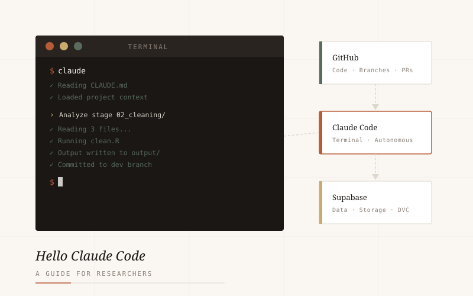

A collection of applied work spanning machine learning, causal inference, and data-driven policy analysis.

A step-by-step guide to setting up a reproducible research workflow using Claude Code, GitHub Codespaces, and Supabase. Learn how to build a professional, protected, and fully automated project environment from scratch — no prior developer experience required.